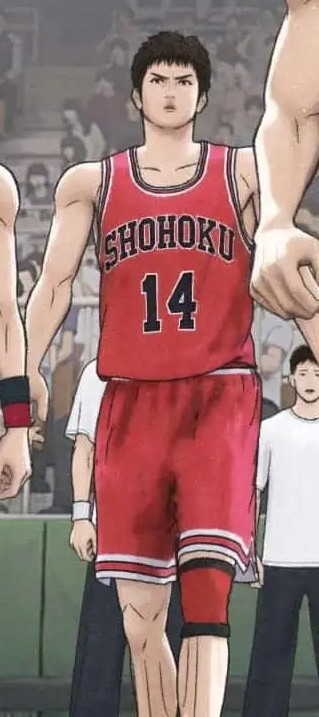

The Sharpshooter
Hisashi Mitsui is Shohoku's deadly long-range shooter and one of its most complex characters. A former junior high MVP, Mitsui’s early career was derailed by injury and inner turmoil, leading him down a rebellious path. After a heartfelt return to basketball, he rediscovers his love for the game and redeems himself as a key player. With a cool head and clutch shooting, especially from three-point range, Mitsui is both a technical asset and a symbol of redemption. His return to the court inspires his team and reminds everyone of the passion that fuels champions.